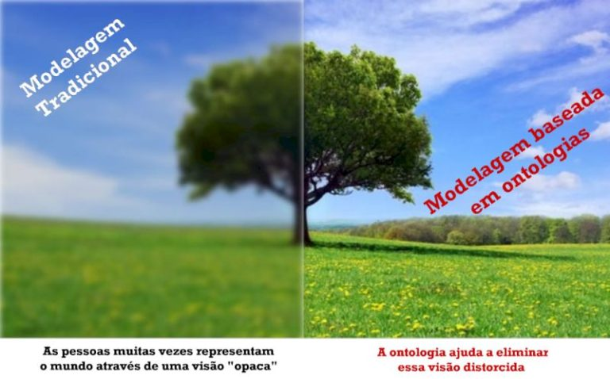

Centro Nacional de Pesquisa em Ontologias
Ciência da Informação – UFMG
Porque a NCOR-BR
A NCOR-BR é uma rede dinâmica e singular, comprometida com a melhoria de sistemas de informação através da aplicação de princípios de origem filosófica à conhecidos problemas de modelagem e organização do conhecimento em instituições diversas.
O NCOR-BR foi concebido e criado por um grupo de profissionais e pesquisadores que identificou a fundamentação ontológica como fator de sucesso para sistemas de informação no contexto socio-técnico da transformação digital no século XXI.
Desde a sua concepção, a associação tem trabalhado com uma plataforma conceitual-terminológica para fundamentação de sistemas da informação antes mesmo de sua implementação. Nossos princípios em relação à sistemas de informação envolvem quatro palavras-chave:
ONTOLOGIA ♦ TECNOLOGIA ♦ PESSOAS ♦ EDUCAÇÃO
A NCOR-BR é uma associação sem fins lucrativos preparada para oferecer subsídios teórico-práticos a estudantes, pesquisadores e profissionais, buscando um efeito multiplicador na sociedade.
